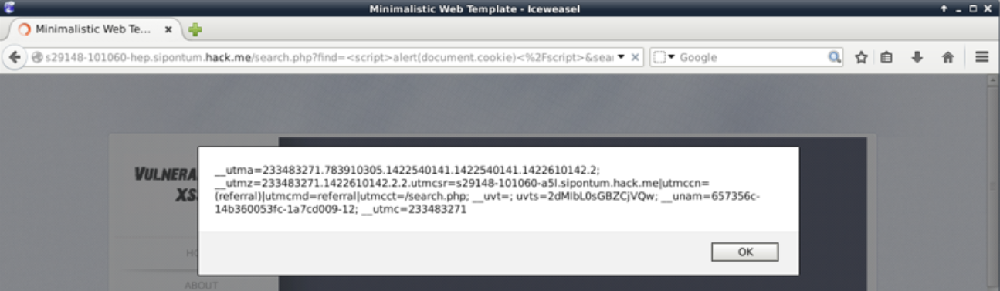

Como aprendido en modulo de Web Applications, Javascript si no tienen el flag HttpOnlyactivado
En muchos casos robarse un Cookie significa robarse la session del usuario!!
Por Ejemplo:
Podemos ensenar el cookie que esta corriendo con
<script>alert(document.cookie)</script>

Con el siguiente código, puede enviar contenido de cookies a un sitio controlado por un atacante.

El script genera un objeto de imagen y apunta su source a un script en el servidor del atacante (attacker.site).

El navegador no puede saber de ante mano si la fuente es una imagen, por lo que carga y ejecuta el script,
incluso sin mostrando cualquier imagen! Por tanto, la cookie se envía al Attacker.site.
The log.phpscript saves the cookie in a text file on the attacker.site: